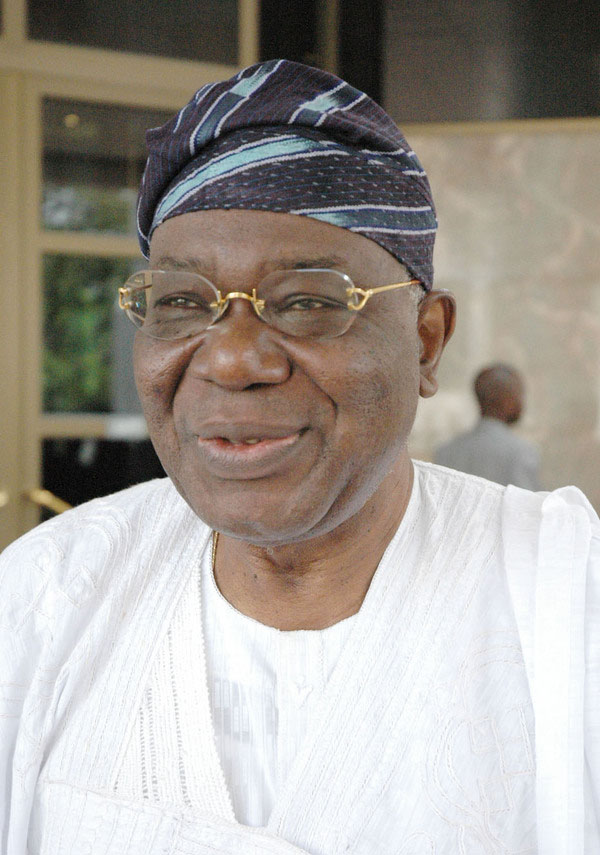

1936 - 2022
"A Man Of Destiny, Chosen For His Time"
Chief Ernest Adegunle Oladeinde Shonekan GCFR (9 May 1936 – 11 January 2022) was a Nigerian lawyer and statesman who served as the interim Head of State of Nigeria from 26 August 1993 to 17 November 1993. He was titled Abese of Egbaland from 1981 (in addition to a variety of other chieftaincy titles).[1] Prior to his political career, Shonekan was the chairman and chief executive of the United African Company of Nigeria (successor of The Niger Company), a vast Nigerian conglomerate, which at the time was the largest African-controlled company in Sub-Saharan Africa.[2] Early life Shonekan was born in Lagos on 9 May 1936. The son of an Abeokuta-born civil servant, he was one of six children born into the family.[3] Shonekan was educated at CMS Grammar School and Igbobi College.[4] He received a law degree from the University of London, and was called to the bar. He later attended Harvard Business School.